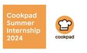

クックパッド開発者ブログ
https://techlife.cookpad.com/
クックパッド開発者ブログ
フィード
日本とグローバルのクックパッドを統合しました 95
95
クックパッド開発者ブログ
こんにちは、レシピ事業部プロダクト開発グループの赤松(@ukstudio)です。 昨年の10月頃からレシピ事業部ではひとつの大きなプロジェクトに取り組んでいました。このプロジェクトは社内ではOne experienceと呼ばれています。本記事ではこのOne experienceについてご紹介します。 One experienceとはなにか クックパッドではレシピサービスを日本を含めた71ヶ国、29言語で展開しています。これまでは日本のサービスと海外のサービスは独立した別のシステムで別のサービスとして展開してきました。日本のレシピサービスは日本の組織が、海外のレシピサービスはイギリスにオフィスを…
13時間前

Cookpad Summer Internship 2024に参加しました 1
クックパッド開発者ブログ
はじめに こんにちは。9月からクックパッドで1ヶ月間サマーインターンシップに参加していた中尾です。 今回はクックパッドで1ヶ月間過ごしてみて、やったことや感じたことをレポートしていきます。 自己紹介 私は現在、立命館大学の学部3年で、情報系を専攻しています。今回のインターンシップでは遠方に住んでいるということもあり、初めの1週間はオフィスに出社し、以降はリモートで勤務していました。宿泊したホテルからオフィスまでが徒歩2分くらいで激アツでした。 インターンシップに参加するまで クックパッドは技術力の高い会社というイメージで、ロゴやデザインが好きだったということもあり(かわいいですよね？)、募集が…
8日前
開発環境のデータベースでも本番環境相当のデータを使う 197
クックパッド開発者ブログ
こんにちは。レシピ事業部バックエンド基盤グループの石川です。 2014 年、このブログに『開発環境のデータをできるだけ本番に近づける』というタイトルの記事が投稿されました。 クックパッドでは、ユーザーさんが実際に体験している状況と近い状況を再現しながら開発することに価値があると考えています。技術的には、最初からレコードがたくさんあることによってパフォーマンス問題に気付きやすくなるなどの長所がありますし、サービス開発としても、実際のユーザーさんの体験を最速でなぞって素早くフィードバックループを回せるようになるという長所があります。 この慣習は 2014 年の記事から 10 年経った今でも続いてい…
10日前

iOSDC Japan 2024に社員2名が登壇 & スポンサー企画のご案内
クックパッド開発者ブログ
こんにちは！クックパッドでモバイルアプリ開発エンジニアをしている新堀 (@tk108gabalian) です。 現在クックパッドでは空前のイジンデンブームが到来しております。イジンデンというのはダイソーから発売されているトレーディングカードゲームです。社内では日々イジンデン対応社員達のバトルが繰り広げられています。ダイブトゥ……イジンデン！ さて、今年もiOSDCが8/22(木)〜8/24(土)に開催されますね！ クックパッドはゴールドスポンサーとして協賛させていただきます。 トーク紹介 今回クックパッドからは2名が登壇いたします！ Day 1 8/23(金) 17:40〜 Track B ル…
2ヶ月前
Cookpad Drinkup at RubyKaigi 2024 を開くために気にしていたこと
クックパッド開発者ブログ
RubyKaigi 2024 が開かれました。クックパッドは協賛しており、懇親会も開きました。この記事では、カンファレンスで懇親会を開くにあたって気をつけていたことや、うまくいったこと、うまくいかなかったことをまとめます。RubyKaigi に関わらず、技術者コミュニティを盛り上げる手段のひとつとしてご覧ください。
4ヶ月前
クックパッドは RubyKaigi 2024 に参加していました！イベントレポート
クックパッド開発者ブログ
はじめに こんにちは。レシピ事業部プロダクト開発グループの堀内 (@Sota_Horiuchi)です。普段はバックエンドの開発を行っている新卒2年目のエンジニアです。 RubyKaigi 2024が 2024 年 5 月 15 日から 17 日に沖縄県那覇市で開催され、クックパッドからは総勢 24 名が参加しました。参加したメンバーのうち 13 名が新卒 3 年目までのエンジニアであり、社内の若手バックエンドエンジニアがほぼ参加していました。 また、クックパッドは Wi-Fi スポンサーとして協賛しており、更に 16 日の夜には Cookpad Drinkup at RubyKaigi 202…
4ヶ月前
NLP2024 に参加しました
クックパッド開発者ブログ
こんにちは！ 技術部機械学習グループの山口 (@altescy) です。 先月、神戸にて開催された言語処理学会第30回年次大会 (NLP2024)に同じく機械学習グループの深澤 (@fufufukakaka)と共に参加してきました。 昨年に引き続き今年も過去最多の参加者数となり、言語処理研究の盛り上がりを実感しました。 特に去年の年次大会 (NLP2023) のタイミングで GPT-4 が発表されて以降、自然言語処理の研究は大きな転換期を迎えていると感じます。 大規模言語モデル (LLM) が研究の主流となる中、どんな課題や発見があるのか、期待をもって参加する大会となりました。 この記事では …
6ヶ月前
AWS 内で大規模言語モデルを利用できる Amazon Bedrock を使って作る RAG アプリケーション
クックパッド開発者ブログ
こんにちは。機械学習グループの深澤(@fukkaa1225)です。 先日、Amazon Bedrock が一般利用できるよう(GA)になりました 。本記事ではこちらを用いて RAG(Retrieval-augmented generation) アプリケーションを作成してみた様子と、他 LLM モデルとの比較結果についてご紹介します。 Amazon Bedrock とは aws.amazon.com 公式サイトより文言を引用します。 Amazon Bedrock は、Amazon や主要な AI スタートアップ企業が提供する基盤モデル (FM) を API を通じて利用できるようにする完全マネ…
1年前
Hatamoto 〜モバイルアプリに関する情報を一元管理するためのWebアプリケーション〜
クックパッド開発者ブログ
こんにちは。元モバイル基盤部（現クックパッドマートプロダクト開発部）の大川（@aomathwift）です。 クックパッドでは、レシピサービスのクックパッドアプリだけでなく、生鮮 EC サービスのクックパッドマートをはじめ、複数の iOS アプリを開発しています。 複数のアプリを開発する上で、機能そのものの開発以外に開発者が気にかけないといけないことがいくつかあります。 例えば、各種証明書の有効期限、ライブラリの選定やバージョンアップなどです。開発者はこれらの関心事に対して、全てのアプリで同じように注意していなければいけません。 クックパッドでは、「Hatamoto」という Web アプリケーシ…
1年前
開発を快適にするiOSアプリ内ログ確認ツール
クックパッド開発者ブログ
クックパッドでは、iOSアプリ内の行動ログやネットワーク通信ログを見やすく使いやすくする「ログ確認ツール」を活用しています。その使い方や背景、実装時の知見などについて詳しくご紹介します。
1年前
クックパッドの検索反映時間を 1/288 にしたシステム改修
クックパッド開発者ブログ
レシピを投稿してから検索結果に反映されるまでの時間を、24 時間から 5 分にまで短縮したシステム改修について紹介します。
1年前
クックパッドのフロントエンド CSS in JS をゼロランタイムに切り替えました
クックパッド開発者ブログ
こんにちは。レシピ事業部のkaorun343です。我々のチームではレシピサービスのフロントエンドを Next.js と GraphQL のシステムに置き換えている話 - クックパッド開発者ブログにて紹介したとおり、レシピサービスを Next.js ベースの新システムへと移行しています。今回は、この新システムのCSS in JSをEmotionからゼロランタイムのvanilla-extractへ変更した話です。 vanilla-extract.style 背景 以前書いた レシピサービスのフロントエンドに CSS in JS を採用した話 - クックパッド開発者ブログでは、CSS in JSライ…
1年前
iOSアプリに実装されたUI要素のフレームやマージンを手軽に確認できるツールを作る
クックパッド開発者ブログ
こんにちは、クックパッドマートプロダクト開発部の佐藤（@n_atmark）です。 普段はクックパッドマートのモバイルアプリ開発に従事しています。 今回、iOSアプリに実装されたUI要素のフレームやマージンを手軽に確認できるツールを作ってみたのでその紹介を行います。 動作している物を見ていただくのが分かりやすいと思うので、早速ですが動作イメージがこちらになります。 フレームインスペクタの動作の様子 (gif) アプリに実装されたUI要素を長押しすると、スクリーンとの距離やUI要素のサイズ、角丸の半径を表示するようにしています。 また、2本指で二つのUI要素を長押しすると、長押ししたUI要素間のマ…
1年前
クローズしたサービスの管理画面を静的サイトにする
クックパッド開発者ブログ
こんにちは、技術部の石川です。 ある日、社内の各種アプリケーションを眺めている中で、とあるクローズしたサービスの管理画面を担っていたウェブアプリが今も動いていると気付きました。簡単にヒアリングしたところ、サービス自体はクローズしたものの、保有していたデータが次のチャレンジに生かせるため管理画面だけ残しているとのことでした。 一方で、その管理画面へのアクセスはそう多くありませんでした。毎日ちょっとだけのリクエストを処理するためだけにデータベースとサーバーが動いており、少し無駄がある状態になっていました。 やや気になったので検討した結果、最終的にこの管理画面アプリを Next.js 製の静的なデー…
1年前
Rubyの並列並行処理のこれまでとこれから
クックパッド開発者ブログ
本記事では、Rubyの並行並列処理の改善についての私の取り組みについて、おもに RubyKaigi 2022 と 2023 で発表した内容をもとにご紹介します。Ruby（CRuby/MRI）は古くからThreadによる並行処理のための仕組みを提供しており、並列処理はUnixなどのプロセスなどを用いる、つまりRubyの外側（？）の機能と組み合わせて使う必要がありました。そして、Ruby 3.0から導入された Ractor で Ruby プロセス内で利用できる並列処理の仕組みが導入されました。まだまだ不十分なので、これからもっと頑張っていこう、っていう内容の記事になります。
1年前
TechMTG文字起こしレポート：クックパッドマートのAndroidアプリのUI開発のこれまでとこれから
クックパッド開発者ブログ
こんにちは、CTO室の緑川です。クックパッドでは隔週で全エンジニアが集まるTechMTGというミーティングを行っています。今回はTechMTGで話した技術的な取り組みや解説を文字起こしレポートとしてお届けします。 今回は4月19日に発表されたクックパッドマートでのAndroidアプリのUI開発についてです。 以下、レポート本文です。 クックパッドマートのAndroidアプリのUI開発のこれまでとこれから こんにちは、門田です。 2016年に新卒入社をして2019年にクックパッドマートに移動し、今は買物プロダクト開発部というところでAndroidエンジニアをしています。 今回はAndroidアプ…
1年前
iOS画像非同期取得
クックパッド開発者ブログ
こんにちは、モバイル基盤のヴァンサン(@vincentisambart)です。 半年くらい前に、iOSクックパッドアプリで画像非同期取得を自作することになりました。導入してから何ヶ月も問題なく動いているので、どう動いているのか紹介しようと思います。でもその前に自作することになった経緯を説明しましょう。 自作経緯 長年画像非同期取得に既存のライブラリを使っていましたが、昨年ライブラリの不具合で画像の取得が稀に失敗していたバグがいくつかありました。バグが修正されて、その数ヶ月後にまた似た問題。 この状態が好ましくなかったので、以下の選択肢のどれかにしようと議論しました。 使っているライブラリのメン…
1年前
Project Googrename: Google Workspace で 14 年運用されたドメインエイリアスをプライマリドメインに変更 & 全ユーザーを安全にリネームする
クックパッド開発者ブログ
id:sora_h がクックパッドの Google Workspace でドメインエイリアスとして運用されていたものをプライマリドメインへ変更、全ユーザーのドメインも合わせて大規模なリネームを安全に実施した道のりを解説します。
1年前
Path Drawing in SwiftUI
クックパッド開発者ブログ
How to draw shapes using paths in SwiftUI, starting from the basics.
1年前
RubyKaigi 2023 Wi-Fi: 足回り徹底解説
クックパッド開発者ブログ
id:sora_h です。今回は RubyKaigi 2023 で提供した Wi-Fi ネットワークの足周りについて徹底解説します。
1年前
RubyKaigi 2023の冷蔵庫は何だったのか
クックパッド開発者ブログ
エンジニアの成田（@mirakui）です。最近はクックパッドマートの流通基盤エンジニアとして、商品の流通に関わるソフトウェアやハードウェアに携わっています。 さて、クックパッドは先日長野県の松本で開催された RubyKaigi 2023 にスポンサーとして参加しました。そのスポンサーシップの一環として、参加者に配られるドリンクを冷やすための冷蔵庫を提供しました。 会場に設置した6台の冷蔵庫は、私たちが「マートステーション」と呼ぶ、クックパッドマートにおいてユーザーが購入した商品を受け取るための冷蔵庫です。現在は都内を中心に、駅やコンビニエンスストア、マンションの共用部といった生活動線に設置して…
1年前
いい感じのプランニングポーカー作りました
クックパッド開発者ブログ
こんにちは。クックパッド事業部プロダクト開発グループの末田(@terfno_mai)です。 クックパッドがスポンサーする 2023 年のカンファレンスに向けてノベルティ制作をしました。 この記事では、今年作ったプランニングポーカーについて書きます。 プランニングポーカーとは プランニングポーカーについて ChatGPT に聞いてみました。 Q.プランニングポーカーについて 140 字程度で説明してください。 プランニングポーカーは、アジャイルソフトウェア開発において、作業の見積もりを行うための手法で、開発チームがカードを使って難易度を評価し、議論を重ねて合意を得ることで正確な見積もりを行います…
1年前
クックパッドの最近のスマートキッチンの取り組み
クックパッド開発者ブログ
大谷伸弥(@shinyaohtani)と申します。 クックパッドのスマートキッチンの取り組みについて少し公開しようと思います。 料理を自動記録 クックパッドでは毎日の料理をキッチンの現場から楽しみにするために、IRと可視光を同時に扱えるカメラを試作してきました。この写真はそのカメラと、情報提示のためのディスプレイをキッチンに設置した写真です。カメラはキッチンの換気扇部分にマグネットで取り付けることができるように設計したため料理の邪魔にならずに料理を観察できるようになっています。 このカメラを調理を把握するために利用しています。次の写真は唐揚げを観察しています。油の表面温度は今何度かという情報だ…
1年前
NLP2023 に参加しました：座長編
クックパッド開発者ブログ
技術部機械学習グループの原島です。本連載では山口（@altescy）が発表編を、深澤（@fukkaa1225）が聴講編をお届けしてきました。最後にお届けするのは座長編です。 学会があれば発表があり、発表があればセッションがあり、セッションがあれば座長がいます。今年の言語処理学会であれば、延べ 80 人以上もの座長がいたようです。 このように沢山の座長がいるわけですが、その仕事には馴染みがない人も多いのではないでしょうか。そんな人にも、ある日突然、座長の依頼はやってきます。 このブログでは、単なる一つの事例ではありますが、今年の言語処理学会において私が座長として行なったことや気をつけたことについ…
1年前
NLP2023 に参加しました：聴講編
クックパッド開発者ブログ
こんにちは。技術部機械学習グループの深澤(@fukkaa1225)です。 3月に沖縄で行われた言語処理学会2023に参加してきました。本連載の1つ目ではクックパッドとして「レシピに含まれる不使用な材料等に関する記述の抽出」という発表を山口(@altescy)がしてくれた様子をお伝えしました。自分は共著者兼聴講参加です。 本連載の2つ目となるこの記事では気になったり面白いと感じた論文やセッションを紹介していきます。 印象に残ったセッション1: 形態素・構文解析 形態素解析といえば MeCab ですが、一強というわけではもちろんなく、様々なアプローチが提案されています。今回のセッションでは KWJ…
1年前
NLP2023 に参加しました：発表編
クックパッド開発者ブログ
こんにちは！技術部機械学習グループの山口(@altescy)です。 先日、沖縄にて開催された言語処理学会第29回年次大会(NLP2023)に参加してきました。 今年の大会は過去最多の参加者数となり、かつ久しぶりの本格的なオフライン開催ということで大変活気のある大会になったかと思います。 クックパッドからもML/NLPエンジニア3名が参加し、研究発表を行いました。 NLP2023会場裏の砂浜 今週のTechLifeでは、今回から発表編、聴講編、座長編の3回に渡ってNLP2023の参加報告を各参加メンバーからお伝えしたいと思います。 ぜひお楽しみください！ クックパッドと自然言語処理 NLP202…
1年前
モブプログラミングを1年以上継続するコツ
クックパッド開発者ブログ
こんにちは、メディアプロダクト開発部のマーケティングサービス開発グループ(通称msdev)の id:asonas です。msdevウィーク最後の記事です。チームメンバーの記事も是非読んでみてください。 クックパッドの toB 向け事業における ChatGPT API の活用事例紹介 - クックパッド開発者ブログ ポリモーフィック関連を活用し、森羅万象の「いいね」を実現する手法 - クックパッド開発者ブログ マーケティングサービス開発グループでは毎週月曜日13時から17時の決まった時間にモブプログラミングを実践しています。 このモブプログラミングの枠は1年以上継続していて、毎週様々な課題の解決や…
1年前
ポリモーフィック関連を活用し、森羅万象の「いいね」を実現する手法
クックパッド開発者ブログ
こんにちは！メディアプロダクト開発部マーケティングサービス開発グループ (msdev) のなどやま (@pndcat) です。業務では、クックパッドの広告の開発・運用や、新規サービスの開発をしています。本業の推し活動では、今年の夏はたくさんのイベントに参加するため、推し活動もがんばっていく予定です。 今週は msdev week として Techlife を更新しており、この記事は2日目になります。 1日目は三條さんによる「クックパッドの toB 向け事業における ChatGPT API の活用事例紹介」の投稿でした。 本記事も、メーカーズタウンに関するブログなので、ぜひこちらの記事もご覧くだ…
1年前
クックパッドの toB 向け事業における ChatGPT API の活用事例紹介
クックパッド開発者ブログ
メディアプロダクト開発部マーケティングサービス開発グループ(通称 msdev)の三條です。広告システムやメーカーズタウンというBtoBtoCプラットフォームなどクックパッドにおける toB 向け事業の開発・保守・運用を担当しています。 今週は msdev week と題して、 msdev のメンバーから連続で記事の投稿をしていきます。楽しみにしていてください！ 今回は、今流行りの ChatGPT API をメーカーズタウンというプロダクトに活用して機能開発を行い、課題解決を試みた例を紹介したいと思います。 私たちのチームでは、新しい技術を積極的に取り入れつつ、楽しみながらサービスを作っていって…
1年前
Cookpad Summer Internship 2023 を開催します
クックパッド開発者ブログ
クックパッドでは例年サマーインターンシップを開催しています。2023 年に行われるエンジニア向けのインターンシップについてご紹介します。
2年前